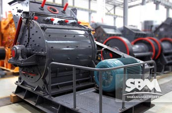
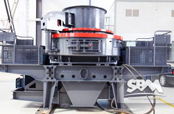

Crushing Equipment
As a leading global manufacturer of crushing and milling equipment, we offer advanced, rational solutions for any size-reduction requirements, including quarry, aggregate, grinding production and complete stone crushing plant. We also supply individual crushers and mills as well as spare parts of them.
-

Crusher Machine
Inquiry service on-line > Crusher Machine Crusher Machine Spare Parts Attention As we all know, Crusher Machine crushing operations rely mainly between high-speed rotation of the rotor and the rotor and fixed between the material and the material of…
-

Sand Making Machine
Inquiry service on-line > Sand Making Machine Sand Making Machine Introduction Sand Making Machine is one of the important equipment concrete aggregate processing system. Impeller by V-belt drive with two motors, the power is directly transmitted to the impeller…
-

Quarry Crusher
Inquiry service on-line > Quarry Crusher Factors that Affect the Quarry Crusher Price More and more people in Quarry Crusher crushing work, customers often buy Quarry Crusher Quarry Crusher asked why this year’s price will float it? Let’s analyze…
-

Cone Crusher
Inquiry service on-line > Cone Crusher Cone Crusher Introduction Cone Crusher is a kind of new type high efficient crushing equipment which is developed by our engineers through over 20 year’s effort of design, manufacture, sale,…
-

Jaw Crusher
Inquiry service on-line > Jaw Crusher Jaw Crusher Introduction PE series jaw crusher is usually used as primary crusher in quarry production lines, mineral ore crushing plants and powder making plants. It can be described as obbligato…
Contact SBM
You can contact our head-office directly
 +86-21-58386189 58386176
+86-21-58386189 58386176- +86-21-58385681